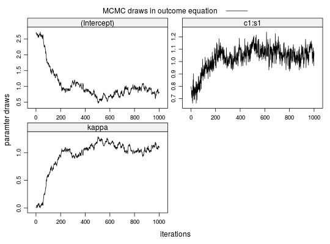
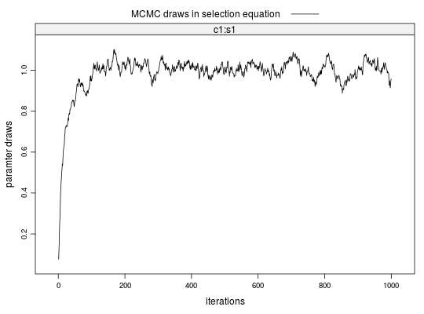

stabit2(OUT = NULL, SEL = NULL, colleges = NULL, students = NULL, outcome = NULL, selection, binary = FALSE, niter, gPrior = FALSE, censored = 1, thin = 1, nCores = max(1, detectCores() - 1), ...)
m.id, college identifier c.id and student identifier s.id.m.id, college identifier c.id and student identifier s.id.TRUE outcome variable is taken to be binary; if FALSE outcome variable is taken to be continuous.TRUE the g-prior (Zellner, 1986) is used for the variance-covariance matrix. (Not yet implemented)kappa parameter that estimates the covariation between the error terms in selection and outcome equation are 0:not censored, 1:censored from below, 2:censored from above.thin=1 saves every draw, thin=2 every second, etc.The function provides a Gibbs sampler for a structural matching model that estimates preferences and corrects for sample selection bias when the selection process is a two-sided matching game; i.e., a matching of students to colleges.
The structural model consists of a selection and an outcome equation. The Selection Equation determines which matches are observed ($D=1$) and which are not ($D=0$). $$ \begin{array}{lcl} D &= & 1[V \in \Gamma] \\ V &= & W\beta + \eta \end{array} $$ Here, $V$ is a vector of latent valuations of all feasible matches, ie observed and unobserved, and $1[.]$ is the Iverson bracket. A match is observed if its match valuation is in the set of valuations $\Gamma$ that satisfy the equilibrium condition (see Sorensen, 2007). The match valuation $V$ is a linear function of $W$, a matrix of characteristics for all feasible matches, and $\eta$, a vector of random errors. $\beta$ is a paramter vector to be estimated.
The Outcome Equation determines the outcome for observed matches. The dependent
variable can either be continuous or binary, dependent on the value of the binary
argument. In the binary case, the dependent variable $R$ is determined by a threshold
rule for the latent variable $Y$.
$$ \begin{array}{lcl}
R &= & 1[Y > c] \\
Y &= & X\alpha + \epsilon
\end{array}
$$
Here, $Y$ is a linear function of $X$, a matrix of characteristics for observed
matches, and $\epsilon$, a vector of random errors. $\alpha$ is a paramter vector to
be estimated.
The structural model imposes a linear relationship between the error terms of both equations as $\epsilon = \kappa\eta + \nu$, where $\nu$ is a vector of random errors and $\kappa$ is the covariance paramter to be estimated. If $\kappa$ were zero, the marginal distributions of $\epsilon$ and $\eta$ would be independent and the selection problem would vanish. That is, the observed outcomes would be a random sample from the population of interest.
Sorensen, M. (2007). How Smart is Smart Money? A Two-Sided Matching Model of Venture Capital. Journal of Finance, 62 (6): 2725-2762.
## --- SIMULATED EXAMPLE --- ## 1. Simulate two-sided matching data for 20 markets (m=20) with 100 students ## (nStudents=100) per market and 20 colleges with quotas of 5 students, each ## (nSlots=rep(5,20)). True parameters in selection and outcome equations are ## all equal to 1. xdata <- stabsim2(m=20, nStudents=100, nSlots=rep(5,20), verbose=FALSE, colleges = "c1", students = "s1", outcome = ~ c1:s1 + eta + nu, selection = ~ -1 + c1:s1 + eta )Generating data for 20 matching markets...m.id y (Intercept) eta nu c1:s1 c1 s1 1 1 4.043161 1 1.843862 1.0241395 0.17515964 -0.3963161 -0.4419695 2 1 4.252354 1 3.241040 -0.2741297 0.28544335 -0.3963161 -0.7202416 3 1 1.837553 1 2.128452 -1.4896441 0.19874488 -0.3963161 -0.5014807 4 1 4.400099 1 1.997213 1.2346701 0.16821544 -0.3963161 -0.4244476 5 1 5.679860 1 2.198810 2.2819670 0.19908279 -0.3963161 -0.5023333 6 1 1.889756 1 1.955294 -1.0164562 -0.04908123 -0.1627601 0.3015557 c.id s.id 1 1 5 2 1 44 3 1 54 4 1 76 5 1 81 6 2 11## 2. Correction for sorting bias when match valuations V are observed ## 2-a. Bias from sorting lm1 <- lm(y ~ c1:s1, data=xdata$OUT) summary(lm1)Call: lm(formula = y ~ c1:s1, data = xdata$OUT) Residuals: Min 1Q Median 3Q Max -5.1032 -0.8373 0.0570 0.8745 3.2334 Coefficients: Estimate Std. Error t value Pr(>|t|) (Intercept) 2.69375 0.03142 85.75 <2e-16 *** c1:s1 0.75852 0.04717 16.08 <2e-16 *** --- Signif. codes: 0 ‘***’ 0.001 ‘**’ 0.01 ‘*’ 0.05 ‘.’ 0.1 ‘ ’ 1 Residual standard error: 1.248 on 1998 degrees of freedom Multiple R-squared: 0.1146, Adjusted R-squared: 0.1141 F-statistic: 258.6 on 1 and 1998 DF, p-value: < 2.2e-16[1] -0.2062932Call: lm(formula = V ~ -1 + c1:s1, data = xdata$SEL) Residuals: Min 1Q Median 3Q Max -3.9728 -0.6657 -0.0007 0.6792 3.9280 Coefficients: Estimate Std. Error t value Pr(>|t|) c1:s1 1.00548 0.00985 102.1 <2e-16 *** --- Signif. codes: 0 ‘***’ 0.001 ‘**’ 0.01 ‘*’ 0.05 ‘.’ 0.1 ‘ ’ 1 Residual standard error: 1.003 on 39999 degrees of freedom Multiple R-squared: 0.2067, Adjusted R-squared: 0.2067 F-statistic: 1.042e+04 on 1 and 39999 DF, p-value: < 2.2e-16etahat <- lm2a$residuals[xdata$SEL$D==1] lm2b <- lm(y ~ c1:s1 + etahat, data=xdata$OUT) summary(lm2b)Call: lm(formula = y ~ c1:s1 + etahat, data = xdata$OUT) Residuals: Min 1Q Median 3Q Max -3.5938 -0.6990 0.0384 0.7078 2.9276 Coefficients: Estimate Std. Error t value Pr(>|t|) (Intercept) 1.00160 0.05774 17.35 <2e-16 *** etahat 0.98683 0.03025 32.63 <2e-16 *** c1:s1 1.02606 0.03898 26.32 <2e-16 *** --- Signif. codes: 0 ‘***’ 0.001 ‘**’ 0.01 ‘*’ 0.05 ‘.’ 0.1 ‘ ’ 1 Residual standard error: 1.008 on 1997 degrees of freedom Multiple R-squared: 0.4225, Adjusted R-squared: 0.4219 F-statistic: 730.4 on 2 and 1997 DF, p-value: < 2.2e-16## 3. Correction for sorting bias when match valuations V are unobserved ## 3-a. Run Gibbs sampler (when SEL is given) fit2 <- stabit2(OUT = xdata$OUT, SEL = xdata$SEL, outcome = y ~ c1:s1, selection = ~ -1 + c1:s1, niter=1000 )Drawing 1000 MCMC samples...## 3-b. Alternatively: Run Gibbs sampler (when SEL is not given) fit2 <- stabit2(OUT = xdata$OUT, colleges = "c1", students = "s1", outcome = y ~ c1:s1, selection = ~ -1 + c1:s1, niter=1000 )Drawing 1000 MCMC samples...## 4. Implemented methods ## 4-a. Get coefficients fit2Call: stabit2.default(OUT = xdata$OUT, colleges = "c1", students = "s1", outcome = y ~ c1:s1, selection = ~-1 + c1:s1, niter = 1000) Coefficients: o.(Intercept) o.c1:s1 o.kappa s.c1:s1 0.8087482 1.0707257 1.1027574 1.0035737Coefficients for multi-index sample selection model. Method: Sorensen (2007), two-sided matching market Call: stabit2.default(OUT = xdata$OUT, colleges = "c1", students = "s1", outcome = y ~ c1:s1, selection = ~-1 + c1:s1, niter = 1000) Selection equation: Estimate StdErr t.value p.value c1:s1 1.003574 0.096276 10.424 < 2.2e-16 *** Outcome equation: Estimate StdErr t.value p.value (Intercept) 0.808748 0.500689 1.6153 0.1064103 c1:s1 1.070726 0.096949 11.0442 < 2.2e-16 *** kappa 1.102757 0.290144 3.8007 0.0001486 *** --- Signif. codes: 0 '***' 0.001 '**' 0.01 '*' 0.05 '.' 0.1 ' ' 1Marginal effects for multi-index sample selection model. Method: Sorensen (2007), two-sided matching market Call: stabit2.default(OUT = xdata$OUT, colleges = "c1", students = "s1", outcome = y ~ c1:s1, selection = ~-1 + c1:s1, niter = 1000) Selection equation: Estimate StdErr t.value p.value c1:s1 0.283103 0.027159 10.424 < 2.2e-16 *** Outcome equation: Estimate StdErr t.value p.value (Intercept) 0.808748 0.500689 1.6153 0.1064103 c1:s1 1.070726 0.096949 11.0442 < 2.2e-16 *** kappa 1.102757 0.290144 3.8007 0.0001486 *** --- Signif. codes: 0 '***' 0.001 '**' 0.01 '*' 0.05 '.' 0.1 ' ' 1## 4-d. Also try the following functions #coef(fit2) #fitted(fit2) #residuals(fit2) #predict(fit2, newdata=NULL) ## 5. Plot MCMC draws for coefficients plot(fit2)
